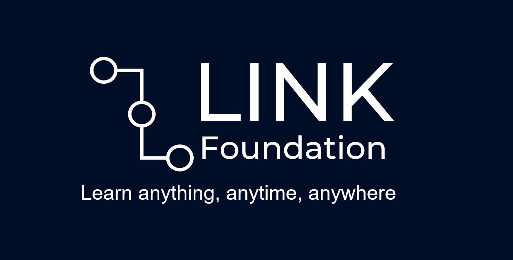

Link Foundation
Enlaces: PDF
Link Foundation es el nombre de una empresa ficticia diseñada con la metodología de diseño Google Sprint con el concepto de ofrecer una plataforma educativa para todas las edades, junto con los recursos para operar en zonas rurales, aprovechando tecnologías como Starlink, chatbots de LLM y una plataforma web centralizada.
El concepto de la empresa fue definido como proyecto final de la materia Inglés para las Tecnologías de Información impartido por la profesora Raquel Torres Peralta en colaboración con Alex Raúl Angulo Martínez, Mario Felipe Corella Márquez, Sebastián Sotomayor Gallegos e Irving Eduardo de la Luz Vasquez, entregado el semestre 2024-2.
Al conceptualizar el sistema, la maestra solicitó desarrollar un concepto relevante y con un gran impacto social, y, reconociendo la importancia de las plataformas educativas en línea (como Khan Academy, HarvardX, GeeksForGeeks, etc.), propuse una plataforma en línea que personas con escasos recursos pudieran acceder, desarrollando el diseño por medio de los siguientes pasos:
- Entendimiento: Se creó una base de datos de conocimientos necesarios para un desarrollo consistente del concepto, utilizando el método de discusión relámpago para compartir ideas de negocio, usuarios y ángulos tecnológicos.
- Definición: Con la información considerada, se empezaron a establecer métricas para medir el éxito del proyecto, así como la especificación de un enfoque sobre el que trabajar.
- Sketch: En el sketch se tomó inspiración de proyectos existentes y se compartieron ideas para considerar la mejor forma de presentar el concepto, diseñando un sketch de solución por integrante de equipo.
- Decisión: En la fase de decisión se compartieron los sketches de solución y se refuerza el enfoque, finalizando la dirección del prototipo.
- Prototipado: En esta fase se elaboró un prototipo del concepto establecido, creando un prototipo rápido. Dicho prototipo se puede encontrar en el enlace adjunto al inicio de esta página.
- Validación: En la validación, el prototipo se presenta a los usuarios finales (o, en nuestro caso, a la profesora) para reunir retroalimentación y verificar la factibilidad del proyecto.
La maestra apreció la consideración de buscar ayudar a aquellos sin fácil acceso a la educación, reconociendo la importancia del problema y reconociendo nuestro seguimiento de la metodología como sólido, ofreciendo una experiencia de aprendizaje muy importante para mí.